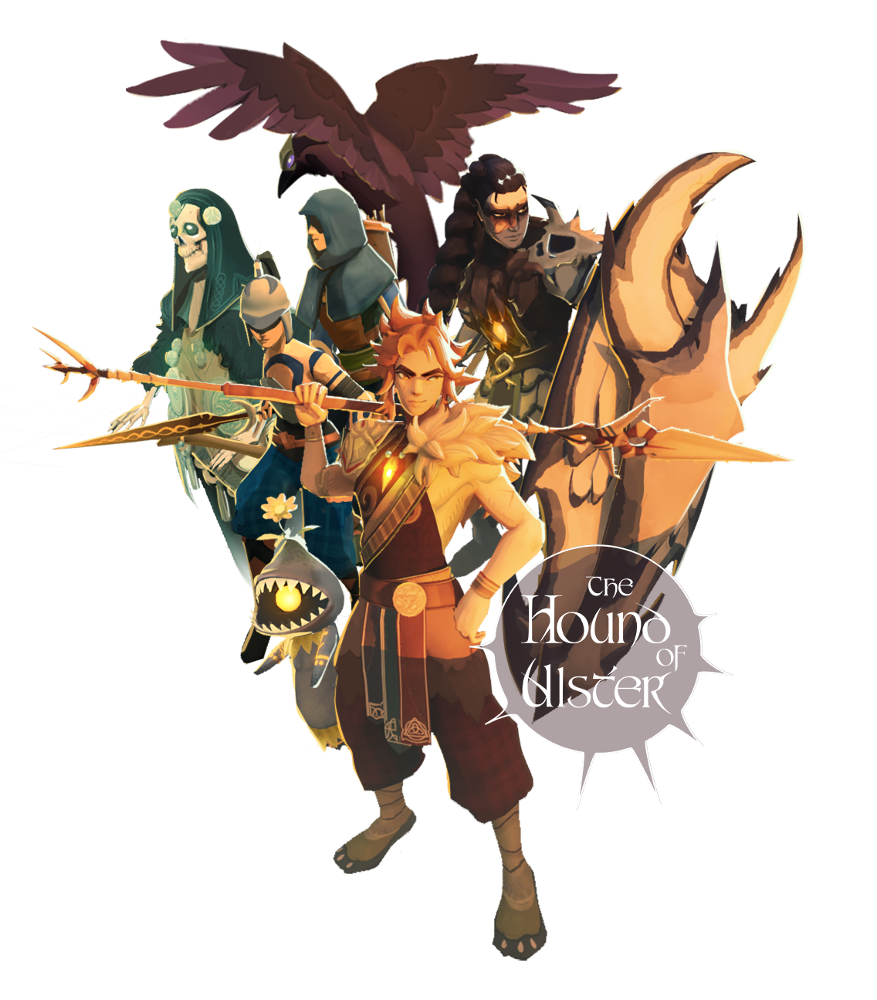

Hound of Ulster
Hound of Ulster is an action-packed game with fantastical elements and thrilling combat, offering a free reinterpretation of the myth from the Ulster Cycle. Explore a world that unfolds tile by tile as you fight to reach your goal: the Bull of Cooley.
Meet the Characters
{% for character in site.data.characters %}
{% endfor %}
{% if character.image %}
 {% endif %}
{% endif %}
{{ character.name }}
{{ character.description }}